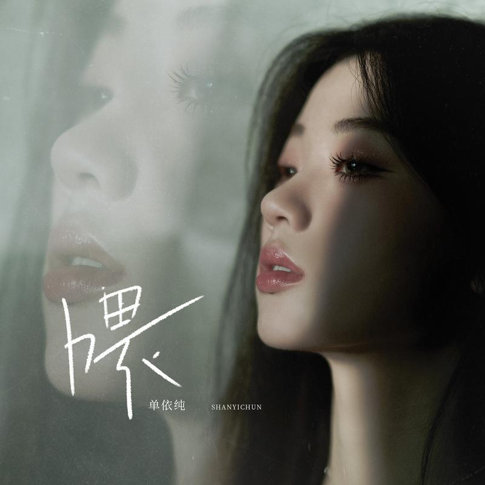

永不失联的爱
层层推进的情绪和克制爆发。
NOW PLAYING
把三位音乐人的代表作放进同一张播放列表，按下播放，沿着声音与情绪继续听。
SELECTED SONGS
点击任意作品即可试听保存在本地的音频片段（约 1 分钟），播放进度与当前曲目状态实时同步。
层层推进的情绪和克制爆发。

更轻盈的律动与近距离的语气。

用柔和音色保留叙事中的留白。

复古摇滚质感与不被定义的态度。

用更宽阔的旋律讲述坚定与成长。

写下错过、成长与来不及兑现的愿望。
LIVE VIDEO ARCHIVE
对应歌手与歌曲的现场影像，视频文件已放入本地项目，可直接播放。
视频来源：Bilibili 对应歌曲页面（点击下方按钮可打开原视频） 打开原视频 ↗
还没有留言，来写下第一条吧。
LISTENERS' NOTES
边听边留下话
评论和点赞已连接到本地 PHP 接口，刷新页面后仍会保留。